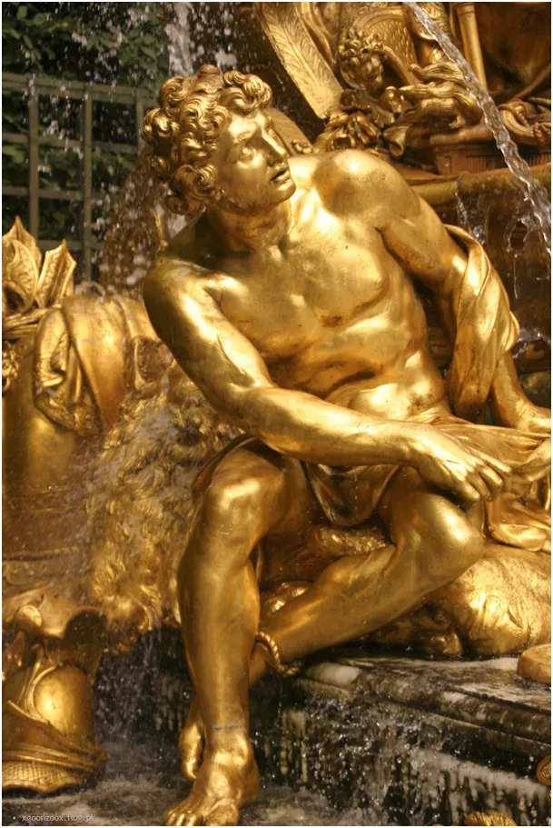
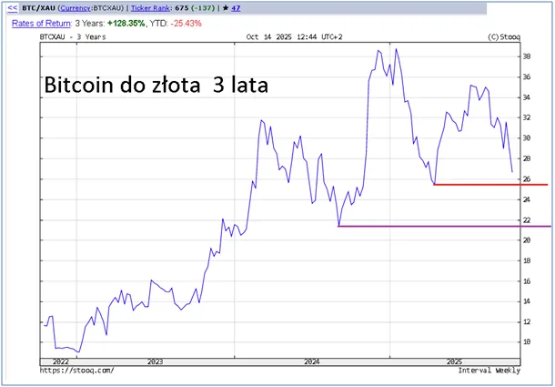
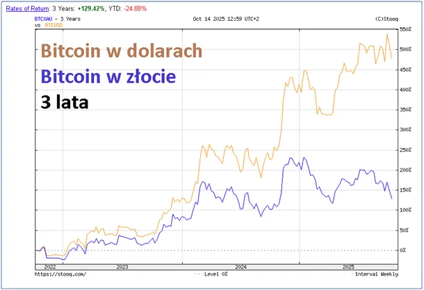

Dziś złoto jest królem Midasem.
Bitcoin notowany w złocie za chwile może spaść poniżej ceny sprzed pół roku, tj. poniżej 26 uncji, potem jest próg sprzed roku w okolicach 22 uncji, a potem to już tylko ciemność na monitorach.
Kilka razy pisałem o hazardowym charakterze kryptowalut, wtedy atakowali mnie eksperci, polecali "nadrobić wiedzę" i wyjść w "zakamarków ciemnoty epok minionych". " https://pawelklimczewski.pl/2023/09/09/zloto-z-papieru-sie-nie-swieci/

Podobnie jak dziś złoto, w lokalnych maksimach, entuzjaści postępu kupowali kompletnie wirtualne Bitcoiny za bajońskie sumy. Dziś pocieszają się drugim wykresem ceny Bitcoiny w dolarach, to fikcja, bo waluty tracą z dnia na dzień na rzecz złota, a za nimi drożeją ziemia, domy, mieszkania, to wszystko, co w życiu chcemy zdobyć i na co latami pracujemy.

Oczywiście nikt nie wie, co będzie jutro, czy nawet za godzinę, jest jednak prosta logika, która mówi, że im więcej dolarów na świecie, tym mniej one są warte, a Rezerwa Federalna USA drukuje bez wytchnienia na coraz to nowe wojny.
Polecam omijać wszelkich panikarzy i naganiaczy piszących o kończących się fizycznych zapasach kruszców:
1. Srebro z powodów podatkowych w Polsce nie jest metalem inwestycyjnym.
2. Złota król Midas zawsze dorobi ile trzeba.
Foto: król Midas
P.s. Król Midas osiągnął swój cel, wszystko czego dotknął zamieniało się w złoto. Niestety, gdy przytulił swą ukochaną córkę ona zamieniła się na zawsze w złoty posag.
Paweł Klimczewski